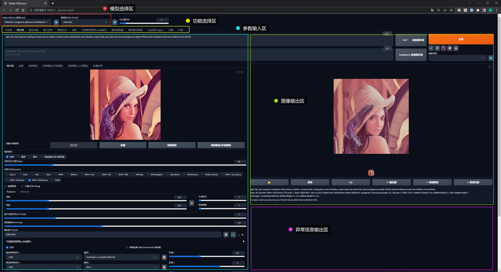

0x00 导航
鉴于 AI 绘画的知识点较多，限于篇幅及便于分类组织，我会以一个系列文章的形式记录：
- 系列 01：《AI 绘画原理与工具》
- 系列 02：《AI 绘画模型扫盲》
- 系列 03：《AI 绘画模型推荐》
- 系列 04：《文生图：不会念咒的炼丹师不是一个好画家》
- 系列 05：《图生图：突破次元圈限制》
- 系列 06：《高清修复：轻松拥有 24K 钛合金画质》
- 系列 07：《提示词进阶：渐变|交替|混合》
- 系列 08：《LoRA 专题：五大应用场景》
- 系列 09：《LoRA 训练：不会炼丹的魔法师不是一个好画家》
- 系列 10：《ControlNet: 姿态控制》
- 系列 11：《ControlNet 进阶：打造炫酷的艺术字和二维码》
- 系列 12：《AI 动画初探：整个宇宙为你而闪烁》
你当前正在阅读的是系列 01《AI 绘画原理与工具》
0x10 AI 绘画原理
想要入门 AI 绘画，首先需要了解它的原理是什么样的。
其实很早就已经有人基于深度学习模型展开了对图像生成的研究了，但在那时，生成的图像分辨率和内容都非常抽象。
直到近两年，AI 产出的图像内容的质量变高、而且有一定的艺术价值，这时它才算正式拥有了理解人类所表达的意思去作画的能力。
虽然把这个过程称之为 “AI 绘画”，但实际上它并不是像人类画图一样，打草稿、勾线描边、上色、细节加工等等、按部就班的去完成一幅画作的。
AI 另辟蹊径地采取了一个人类不曾设想过的途径去画画：Diffusion（扩散）。
我们可以先看一下 AI 绘画的过程：
你已经看到了扩散的过程了，但可能很多同学其实还是一知半解。
如何用通俗易懂的方式去理解扩散呢 ？
B 站的大佬 Nenly同学 给出了 “眼睛一闭一睁” 这样生动形象的解释。
这是一幅在计算机图像处理界最为传奇的一张照片 —— 莱娜图（莱娜・瑟德贝里）：
如果让你把这幅画用二次元动漫风重新绘制一遍，你会怎么做呢？
现在尝试着把你的眼睛眯到直撑一条缝去看图片，她是不是变得模糊了：
保持这个状态，想象她正在逐渐变的二次元，随后慢慢睁开眼睛：
现在这幅画已经变得完全不同了。
其实这就是一个扩散模型工作的基本流程了：
在这个例子里，你可以把自己代入到执行绘画指令的 AI 角色：
- 首先你需要对图像通过增加噪声的方式进行 “扩散”（分散特征信息），也就是让它在你脑海中变得更模糊（就像眯着眼睛的你）
- 当内容模糊了以后，你就有更充分的想象空间从原本的图像形态中抽离：
- 提取你之前看过的二次元图像的特征（深度学习）
- 和当前图像的特征建立关联、糅合
- 对你脑海中加工过的图像进行去噪（逆向扩散），使它在二次元的方向上逐渐变得清晰
- 当你睁开眼睛的时候，这副图像就已经被你根据二次元的形象重新绘制过了
这个原理可以为我们在后面 AI 绘画的实操阶段提供理论基础和指导思想。
当然这个过程被简化过了，实际上代码层面的实现远比这个复杂得多，但现阶段也并不需要知道得太多。
0x20 SD 安装
现在是 AI 百花齐放的时代，我相信你之前肯定听过甚至了解过 Midjourney、 Stable-Diffusion （下文简称 SD）等一些知名的作画工具。
其实目前市面上大多数商业 AI 绘画工具，其实都是基于 SD 开发的，主要是因为在 SD 全面开源之后，在社区出现了大量丰富的模型，而且通过算法迭代，它将 AI 绘画的精细度提上了一个新的台阶，可以在民用级显卡的电脑上、并能在秒级时间内完成图片产出。
现在 SD 已经可以非常轻松地绘制出各种风格的作品，比如动漫风、插画立绘、国风、水墨风、3D 建模，甚至是照片级的拟真图像，而且借助 LoRA、ControlNet 等衍生功能，SD 还可以做到精准控制美术风格、角色细节、姿势动作构图等。
而社区的优势是商业产品很难具备的，而且商业产品需要考虑各种出图限制（费用、网速、内容等），所以我最终选择了 NovelAI —— 它是在以 SD 为底层框架的基础上、兼顾用户体验而产生的一款完全免费的产品，支持图形化管理版本、模型、绘画管理等：
0x21 配置要求
- 系统: Windows（Win10+） 或 Mac
- 显卡: 8G 以上的独显（优先 Nvidia）
显卡是影响出图的最核心因素：
- 显存：直接影响能否出高分辨率的图片（
512x512都画不出，怎么画高清？）、无法加载太多模型限制出图、甚至可能爆内存中止绘制。后期会影响训练规模。 - 性能：直接影响出图效率。AI 绘画其实就是抽卡的过程，很多时候不会一次就得到想要的图片的，需要反复尝试去修改参数。效率太低的显卡几分钟才出一张图，会把你的兴趣耗光的
0x22 SD 安装步骤
- 预装: CUDA（如何选择 CUDA 版本，可以参考我的这篇文章《OpenPose 编译指引》）
- 预装：python 3.10.X （目前最优版本是 3.10.8）
- 预装: Git
- 下载 秋葉aaaki 大佬的 novelai-webui-aki-v4 整合包（已正式命名为 “绘世”），解压后通过
A启动器.exe一键启动即可（视频有详细安装指引）。这个 NovelAI 功能齐备、方便后期更新管理，最适合新手使用。- 注意事项：
- NovelAI 安装路径不要在系统盘，路径尽可能短，绝对不要有中文、空格、特殊字符
- NovelAI 所在的盘符至少有 50GB 以上的空间（后续放入的模型动辄 2G-7G/个，总大小可能几十上百 GB）
0x23 模型安装步骤
假设你的 NovelAI 安装位置在 %{NovelAI}。
你在启动前，需要检查 %{NovelAI}/models/Stable-diffusion/ 目录是否为空，这个目录是存放 AI 绘画主模型的目录，SD 要求必须至少要有一个主模型才能运行。
所以如果目录为空，可以先去 huggingface（抱脸） 下载这两个热门模型放到目录下：
- SD 官方基础模型： stable-diffusion-v1-5
- 二次元风格模型： AbyssOrangeMix3（海外非常受欢迎的，昵称 “深渊橘”）

模型是什么？
NovelAI 只是在 SD 外围封装的一个 “壳”，它和 SD 本身都是没办法生成图片的，那么 AI 是从哪里学会画出各种绘画风格的呢？
其实 AI 出图的经验，就来自一些使用图片素材训练出来的大模型。
不同的模型可以给你的作品带来完全不同的画面内容和画风，这也是 AI 阅片无数的底气所在。
可以把模型类比成一本字典，AI 拿着汉语字典、英语字典，就能根据你给它的提示词去翻字典，从而画出国风、欧美风的图片。
更多关于模型的介绍可以参看本系列的《AI 绘画模型原理扫盲》
0x30 云部署 SD（可选）
假如你本地配置不足以支撑运行 SD，还可以选择在云上部署。
0x31 Google Colab（推荐）
这是完全免费的、一键部署方式，缺点是每次部署只能使用几个小时，过期需要重新部署（大概 10min）。但是尝鲜或演示完全够用了。
- 首先你需要注册一个 Google 账号。
- 在 Github 上找到这个开源项目 colab_stable_diffusion
- 在线打开文件 colab_stable_diffusion(Fixed the suspicion of mining).ipynb
- 然后点击按钮
Open in Colab，会自动跳转到 Google ，操作过程中需要授权（目前不会收取费用，而且会自动释放，放心使用） - 参考下图点击播放按钮，即可自动部署 SD
- 根据提示，在第 4 步部署完成后，可以找到 SD 的访问地址
- 在最后这里可以输入模型地址后、点击播放按钮，即可下载自定义模型到 Google 云盘
效果还不错，还是可以一用的：
0x32 阿里云
阿里云部署 SD 可以细读这篇文章《如何用 Serverless 一键部署 Stable Diffusion》，头三个月有免费额度，但是 NAS 资源需要根据使用量动态支付一定费用。
0x40 认识 SD WebUI
A启动器 的界面就不过多介绍了，主要是用于 SD 版本和模型下载/管理器，操作很简单，按钮的功能就是字面的意思，用几次就理解了。
第一次使用如果怕麻烦，直接点击右下角的 一键启动 就好，它会自动运行 SD 程序启动，并在浏览器打开一个 SD WebUI 页面。
如果没有自动打开，可以访问： http://127.0.0.1:7860/
SD WebUI 是我们以后作画的主要操作页面，它集成了许多在代码层面非常繁琐的功能，并将里面的各项参数的条件转化成了非常直观的选项数值与滑块。
目前开源社区里面 90% 以上的拓展插件都是基于 SD Web UI 去研发的，所以很有必要学会怎么使用它。
参考下图，SD WebUI 界面可以大概分为 5 个区域：
- 模型选择区: 选择作画的模型
- 功能选择区: 选择如何作画
- 参数输入区: 根据喜好设置作画的 “命令” 参数
- 图像输出区: AI 根据设定的 “命令” 绘图的位置
- 异常输出区: 绘图过程中出现异常的显示位置

0x41 模型选择区
在界面左上角有一个名为 “stable defusion 模型” 的下拉框，如果你刚刚有下载我所推荐的两个模型，可以从下拉列表找到它们。
前面安装时也提到过了，模型的存储目录在 %{NovelAI}/models/Stable-diffusion/，现在先记住这个目录就可以了，它是你以后新增更多模型的固有基地。
当有新模型添加到这个目录，点击下拉框旁边的刷新按钮，就可以看到新的模型了。
切换新的模型时需要等待十几秒加载，然后就可以使用了。

在系列 02《AI 绘画模型扫盲》中会介绍各种不同绘画风格的模型获取方式及使用场景
0x42 功能选择区
文生图 & 图生图
这是两种最基本的绘画基本方式，在后面的系列会展开说明。
附加功能
目前主要对图片进行 AI 放大处理，它可以让你生成更清晰的大图。
图片信息
查询已生成图片的提示词、模型、参数、随机种子等信息。当别人分享他所绘制的图片给你时，会很有用。
图库浏览器
每次 AI 在生成一批图片后，都不需要人工保存，这些图片会自动保存到 %{NovelAI}/outputs/ 对应的目录下。
但是 SD WebUI 提供了一个更方便的 图库浏览器 功能，在这里面可以按照类目查看到通过不同方式生成出来的图像。
如果想要把它导出来，就像在浏览器里保存一张图片一样右键另存为即可。
而且图库浏览器还有许多妙用，例如可以直接查看图片的生成信息、快速对图片进行图生图局部重绘等等。
Tag反推（Tagger）
当我们从网上拿到一张不知来源的图片想用来当图生图的参考素材时，就可以利用这个功能反推提示词，以便把生成的图片限制在一定的范围内。
例如我在开头介绍原理时重回的莱娜图，就是借助反推功能生成了莱娜的提示词：
1girl, hat, long hair, looking at viewer, solo, blurry, realistic, closed mouth, looking back, lips, bare shoulders, upper body, blurry background, black hair, depth of field, brown hair, from behind, white headwear然后再借助二次元模型 深渊橘 和 LoRA 插件对她进行重绘。
我们可以看看，如果没有提示词，其他参数保持一致，在单纯图生图的情况下 AI 就会完全放飞自我，很有可能画出来的就是另一个东西了：
设置
在这里可以设定各种和绘图过程相关的选项，例如图像的保存路径、采样参数等等。
现阶段刚入门还不熟悉，维持一切默认一般就不会出问题。
在本系列的后面用到时会提及相关的配置项。
扩展
这里主要是用来安装和管理一些额外的插件的。
为什么有些大佬的 SD WebUI 和你的长得不太一样，功能也多了许多，就是这里在搞怪。
有些安装到你 SD WebUI 里的插件会在界面添加额外的标签，例如【可选附加网络（LoRA 插件）】就是要安装 sd-webui-additional-networks 这个插件才会出现的。
在本系列的后面用到时会提及相关的插件安装。
0x50 其他区域/功能
下面这些先跳过，在本系列的后面，有相关演示场景，到时会讲述，这里限于篇幅不再展开：
- 功能选择区
- 模型合并
- 训练
- 模型格式转换
- 参数输入区
- 图像输出区
- 异常输出区